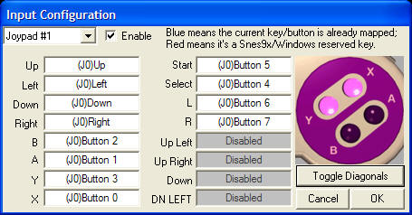
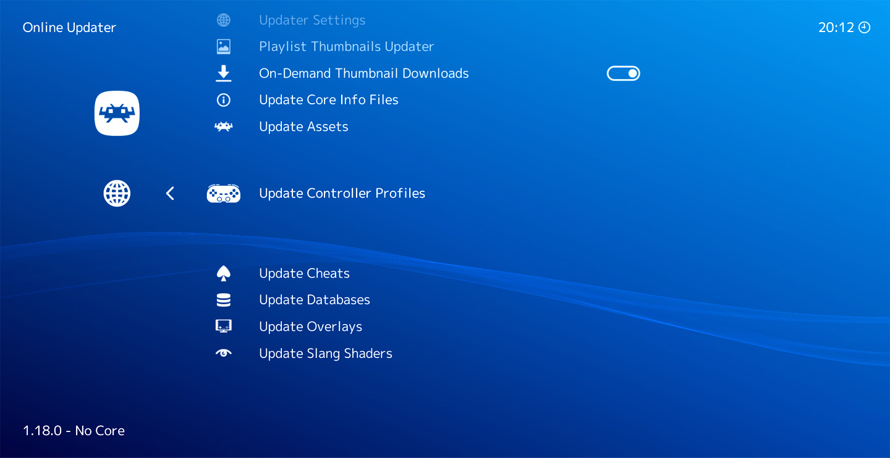

Joypad Auto Configuration¶
Why is it needed?¶
RetroArch runs on many platforms. Each of these platforms has one or more input systems. These input systems in turn differ widely in the way they enumerate the pad buttons. For this reason, your joypad buttons may be mapped differently depending on if you are using Windows, Mac, or Linux.
Traditional emulators allow you map each button of your pad to the original pad of the emulated system. For example, this is how the Snes9x joypad configuration interface looks:

RetroArch also allows this kind of manual mapping. However, RetroArch tries to go further by detecting your joypad and automatically configuring it so manual configuration becomes obsolete.
Benefits¶
With RetroArch joypad auto-configuration system, your joypad will be recognized and will work out of the box.
This allows:
- Use many different joypads and have them attributed to each players like it would work on a real game console.
- Unplug the second joypad, and replace it by another one, even if it's of a different brand and model.
Having automatically configured joypads makes it a lot easier to navigate the RetroArch Menu with the joypad. This is very convenient when running RetroArch on a game console, where a keyboard and a mouse are not always available. It is also what makes RetroArch suitable to build your own game console using Lakka or a similar OS.
Installing or updating joypad profiles¶

The set of joypad profiles used by RetroArch can be downloaded and updated from the menu. Go to Main Menu -> Online Updater -> Update Controller Profiles to get the latest version of the profile pack.
A message will appear at the bottom of the screen showing the download progress and the extraction of the archive.
Generating a joypad profile¶
If your joypad is not recognized by RetroArch even after updating the profiles, you can generate a profile from the menu.
- To avoid other controllers from interfering with your mapping when starting RetroArch, follow these steps: Disconnect all joypads by unplugging their cables or disconnecting them from any wireless connections.
- Connect the controller intended for autoconfiguration. Ensure your system supports the selected connectivity method. If your joypad supports both wired and wireless connections and the initial attempt (e.g., via USB) fails, try the alternative option (e.g., Bluetooth). For example, the Nintendo Switch Pro Controller does not support USB connection on Linux 5.15 and older but does support Bluetooth.
- For Android, run the Android steps first.
- Use
Settings->Input->RetroPad Binds->Port 1 Controls->Set All Controls. If automatic mapping fails for any button (e.g., due to lack of driver support), the process will be interrupted. In case of interruption, manually map the remaining buttons, starting from the one that caused the interruption and continuing through the rest of the list. - Use
Settings->Input->RetroPad Binds->Port 1 Controls->Save Controller Profile - The new profile file (also known as the autoconfig file) will be saved to your disk: [Controller profile directory]/[Controller driver]/[Device index].cfg.
- Proceed with the manual configuration step section below.
How does RetroArch match controllers?¶
When you connect a new controller to RetroArch, the system attempts to automatically configure it by matching it to known profiles. This matching process is crucial for ensuring that your controller works correctly with various games and emulators.
The matching algorithm considers several key factors:
- Controller driver (input_driver): The software interface used to communicate with the controller. To use a specific driver, RetroArch must be configured accordingly by navigating to Settings -> Drivers -> Controller.
- Device Index (input_device): The name of the controller as recognized by the system. The Device Index can be identified by navigating to Settings -> Input -> RetroPad Binds -> Port 1 Controls.
- Vendor ID (input_vendor_id): A unique identifier assigned to the controller's manufacturer.
- Product ID (input_product_id): A specific identifier for the particular controller model.
- Physical ID (input_phys): A locally generated identifier in supported drivers, only valid for one specific controller instance / USB port.
Matching process¶
RetroArch compares these factors against the files in the autoconfig directorys. It calculates a matching score for each profile, selecting the one with the highest score to configure the controller.
The combination of Vendor ID and Product ID is often referred to as "vid:pid" in technical contexts.
This automated matching system allows RetroArch to support a vast array of controllers, reducing the need for manual setup in most situations.
Physical identifier customization¶
Supported controller drivers (currently, this is only Linux/udev) will interrogate further physical details about the controller: USB port and serial number. The value of this attribute can be determined from RetroArch debug logs. A few examples (serial redacted):
[DEBUG] [Autoconf] Config files scanned: driver udev, pad name Microsoft Xbox Series S|X Controller (045e/0b12), phys usb-0000:04:00.0-2/input0, affinity 41
[DEBUG] [Autoconf] Config files scanned: driver udev, pad name Sony Interactive Entertainment Wireless Controller (054c/09cc), phys 28:c1:3c:__:__:__, affinity 50
Both identifiers will be queried, but support is not guaranteed. In the example above, one has the USB port, the other has the serial number.
To use the physical identifier for matching, duplicate the existing autoconfig file (to avoid overwriting it when pulling an update), and extend it with the input_phys attribute. Partial matches are supported.
It is also worth to change display_name, to immediately see if the match went as expected.
Autoconfig variable policy¶
| Controller driver | input_vendor_id/input_product_id required | input_device usage | input_device name variability policy |
|---|---|---|---|
| android | Yes | input_device3 | Use the Bluetooth name since it's primarly used by Android devices. |
| udev | Yes | input_device3 | For optimal configuration, if you are generating Linux raw autoconfig files, it is advisable to reuse the variables for input_device and alternative_input_device. In cases where input_device is used without alternative names, it is recommended to utilize the USB Device Index for a more descriptive identification. |
| linuxraw | No | input_device (for Device Index over USB), input_device_alt1 (for Device Index over Bluetooth), input_device_alt2 (for Device Index over USB on another Linux kernel)... | Use both Device Index over USB and Bluetooth from different Linux kernels; Their names can differ depending on the Linux version in use. |
| sdl2 | Yes | input_device3 | No (uses SDL2 Game Controller community database) |
Alternative variables¶
Managing Controllers with Identical Configurations. Up to nine alternative variables can be used for the following purposes:
linuxraw: Managing Controllers with Identical Configurations:- Device Index (input_device): You can use
input_device_alt1,input_device_alt2,input_device_alt3, up toinput_device_alt9. For names available on both USB and Bluetooth, input_vendor_id should be utilized; for USB-specific names, use input_vendor_id_alt1, and for Bluetooth-specific names, use input_vendor_id_alt2. android,sdl2, andudev: Managing Controllers with Identical Configurations that has different input_vendor_id/input_product_id:- This applies to controllers like the Sony DualShock v1 and v2 for the
android,sdl2, andudevcontroller drivers. Always useinput_vendor_idandinput_product_idfor the most recent controller models, as they are more likely still available on the market. RetroArch version 1.19.1 and earlier cannot utilize _alt autoconfig variables, so usinginput_vendor_idfor the latest controller ensures connectivity in RetroArch. Use..._alt*variables for older controllers. - Vendor ID (input_vendor_id): Options include
input_vendor_id_alt1,input_vendor_id_alt2,input_vendor_id_alt3, up toinput_vendor_id_alt9. - Product ID (input_product_id): Options include
input_product_id_alt1,input_product_id_alt2,input_product_id_alt3, up toinput_product_id_alt9.
Similarities in input variable generation between linuxraw and udev.¶
It's useful to know that the linuxraw driver generates identical file content as udev with the exception of the input_driver variable, and the DPAD inputs, which are handled differently:
linuxraw¶
The linuxraw driver specifies DPAD inputs using axis values, providing precise control over directional inputs. For example:
- autoconfig/linuxraw/Nintendo Switch Pro Controller.cfg example:
input_driver = "linuxraw" input_device = "Nintendo Switch Pro Controller" input_b_btn = "0" input_y_btn = "3" input_select_btn = "9" input_start_btn = "10" input_up_axis = "-5" input_down_axis = "+5" input_left_axis = "-4" input_right_axis = "+4" input_a_btn = "1" input_x_btn = "2" input_l_btn = "5" input_r_btn = "6" input_l2_btn = "7" input_r2_btn = "8" input_l3_btn = "12" input_r3_btn = "13" input_l_x_plus_axis = "+0" input_l_x_minus_axis = "-0" input_l_y_plus_axis = "+1" input_l_y_minus_axis = "-1" input_r_x_plus_axis = "+2" input_r_x_minus_axis = "-2" input_r_y_plus_axis = "+3" input_r_y_minus_axis = "-3"
udev¶
Udev consistently generates the following:
input_up_btn = "h0up"
input_down_btn = "h0down"
input_left_btn = "h0left"
input_right_btn = "h0right"
- autoconfig/udev/Nintendo Switch Pro Controller.cfg example:
input_driver = "udev" input_device = "Nintendo Switch Pro Controller" input_vendor_id = "1406" input_product_id = "8201" input_b_btn = "0" input_y_btn = "3" input_select_btn = "9" input_start_btn = "10" input_up_btn = "h0up" input_down_btn = "h0down" input_left_btn = "h0left" input_right_btn = "h0right" input_a_btn = "1" input_x_btn = "2" input_l_btn = "5" input_r_btn = "6" input_l2_btn = "7" input_r2_btn = "8" input_l3_btn = "12" input_r3_btn = "13" input_l_x_plus_axis = "+0" input_l_x_minus_axis = "-0" input_l_y_plus_axis = "+1" input_l_y_minus_axis = "-1" input_r_x_plus_axis = "+2" input_r_x_minus_axis = "-2" input_r_y_plus_axis = "+3" input_r_y_minus_axis = "-3"
Before you begin¶
Make sure that you run the latest version of RetroArch, to generate a file name and file content via Settings -> Input -> RetroPad Binds -> Port 1 Controls -> Save Controller Profile that is up to date with our current policies.
Modify the Controller Profiles Directory for Non-Root User Accessibility¶
Both the Flatpak and Android versions of RetroArch need adjustments to the Controller Profiles Directory to ensure essential functionality and smooth operation.
Challenges for Android and Flatpak:
- Users are unable to save custom profiles through the path: Settings -> Input -> RetroPad Binds -> Port 1 Controls -> Save Controller Profile.
- Modification Restrictions: You are not allowed to change existing autoconfig files. Files that are initially disabled have "(default-off)" in their names. Without root access, you cannot modify these files to toggle the input_vendor_id and input_product_id settings. This restriction applies to both the "(default-off)" files and the "original" autoconfig files, which are more widely used and have been set to be enabled by default. These original files must also be commented to make changes. This limitation affects both HID and non-HID files, as well as controllers with multiple autoconfig files, such as the Sony DualSense controller, which includes several Android autoconfig files.
Android Configuration¶
Challenge:
Most Android devices are not rooted, and RetroArch's default autoconfig directory requires root access, leading to the following issues:
- Restricted File Access: Users can update controller profiles via Main Menu -> Online Updater -> Update Controller Profiles, but cannot access these files in /data/user/0/com.retroarch/autoconfig. Android's security model prevents non-root users from reading certain files, making it difficult to compare updated profiles with custom-generated ones, thus hindering effective profile management and customization.
- Modification Restrictions: Existing autoconfig files cannot be modified when necessary (refer to the base section for more details).
Resolution:
- Create the directory /storage/emulated/0/RetroArch/autoconfig/android.
- In RetroArch, change the directory path under Settings -> Directory -> Controller Profiles from /data/user/0/com.retroarch/autoconfig (root) to /storage/emulated/0/RetroArch/autoconfig.
- This adjustment allows the autoconfig files to be saved in /storage/emulated/0/RetroArch/autoconfig/android when using Settings -> Input -> RetroPad Binds -> Port 1 Controls -> Save Controller Profile.
Addressing controller navigation issues on non-touchscreen devices¶
Your controller will use the Controller Profile directory /data/user/0/com.retroarch/autoconfig by default in Android. Any autoconfig file that mathces your controller (Vendor ID/Product ID) be used by RetroArch automatically. However, you will not be able to generate a new autoconfig file for your controller if a default autoconfig file encounter issues with the following components:
- DPAD: Essential for navigating menus.
- OK: Necessary for applying settings, such as navigating to
Settings -> Input -> RetroPad Binds -> Port 1 Controls, and selectingSet All ControlsandSave Controller Profile. - Back: Needed to return to
Main Menu -> Quitafter configuringSettings -> Directory -> Controller Profiles, ensuring the settings are saved to retroarch.cfg. Workaround if you have access to another controller: Temporarily connect another controller with a functioning autoconfig "Back" button and adjust the Controller Profiles directory: Settings -> Directory -> Controller Profiles.Main Menu -> Quit-- ensuring the settings are saved to retroarch.cfg.- Disconnect the controller from BlueTooth.
While these issues are not problematic for typical Android devices like smartphones and tablets, which offer touchscreen navigation, they become significant on Google TV (an Android-based OS used by Chromecast) where a touchscreen is unavailable. Additionally, Chromecast's voice remote control lacks autoconfiguration and is incompatible with RetroArch navigation. Even controllers with touchpads are ineffective, as the touchpad button does not function (as observed with PS4/PS5 controllers), and the cursor remains invisible due to a known bug.
Proposed Solution:
To resolve this issue, follow these steps:
- Create a Custom Configuration File:
-
Create the file
retroarch.cfgin the directory/storage/emulated/0/Android/com.retroarch/files/retroarch.cfgwith the following line: -
Set Up a Fallback Configuration:
- Identify the Product ID and Vendor ID of your controller: Ensure that the directory /storage/emulated/0/RetroArch/autoconfig/ remains empty, then restart RetroArch. This action will compel RetroArch to enter fallback mode, displaying a message like "[Controller name] ([Vendor ID]/[Product ID]) not configured, using fallback". Record the four-digit numbers for both IDs.
-
Create a file named
fallback.cfgin the directory/storage/emulated/0/RetroArch/autoconfig/android/with the following configuration settings (don't forget to replaceinput_vendor_id = "[Vendor ID]"andinput_product_id = "[Product ID]"with the values of your controller:input_driver = "android" input_device = "Fallback device" input_vendor_id = "[Vendor ID]" input_product_id = "[Product ID]" input_b_btn = "96" input_y_btn = "97" input_select_btn = "98" input_start_btn = "99" input_up_btn = "h0up" input_down_btn = "h0down" input_left_btn = "h0left" input_right_btn = "h0right" input_a_btn = "100" input_x_btn = "101" input_l_btn = "102" input_r_btn = "103" input_l2_btn = "104" input_r2_btn = "105" input_l3_btn = "106" input_r3_btn = "107" input_l_x_plus_axis = "+0" input_l_x_minus_axis = "-0" input_l_y_plus_axis = "+1" input_l_y_minus_axis = "-1" input_r_x_plus_axis = "+2" input_r_x_minus_axis = "-2" input_r_y_plus_axis = "+3" input_r_y_minus_axis = "-3" -
Launch RetroArch:
-
Start the RetroArch application.
-
Button Testing:
- Test the controller buttons to identify which ones correspond to the "OK" and "Back" functions. This will allow you to navigate and temporarily reconfigure RetroArch.
By applying this solution, you allow your controller to configure RetroArch, enabling navigation to Settings -> Input -> RetroPad Binds -> Port 1 Controls and the selection of Set All Controls and Save Controller Profile. This setup also permits the saving of autoconfig files in the directory /storage/emulated/0/RetroArch/autoconfig/android.
Flatpak Configuration¶
Challenge:
The default autoconfig directory in Flatpak RetroArch also requires root access, which prevents users from:
- Downloading and extracting profiles through Main Menu -> Online Updater -> Update Controller Profiles.
- Saving custom profiles via Settings -> Input -> RetroPad Binds -> Port 1 Controls -> Save Controller Profile.
- Modification Restrictions: Facing similar issues as Android users if the GNU/Linux user lacks root access, as existing autoconfig files cannot be modified when necessary (refer to the base section for more details).
Resolution¶
To address this issue, configure RetroArch as follows:
- Enable Hidden File Visibility
- Navigate to
Main Menu -> Load Content -> File Browser -
Enable the option
Show Hidden Files and Directories -
Modify Controller Profiles Directory
- Go to
Settings -> Directory -> Controller Profiles - Change the directory from the default
/app/share/libretro/autoconfigto/home/youruser/.var/app/org.libretro.RetroArch/config/retroarch/autoconfig.
Note: The actual path of the default directory is: /var/lib/flatpak/app/org.libretro.RetroArch/current/active/files/share/libretro/autoconfig/
By implementing these changes, you'll be able to create and save custom controller profiles without requiring root privileges.
Additional manual configuration steps¶
Add hotkey(s)¶
When using RetroArch, not all controller buttons are automatically mapped through the "Set All Controls" option. Some buttons—such as menu toggles, screenshot triggers, or other special functions—must be configured separately. Here’s a step-by-step guide to ensure all your controller buttons work as desired.
- Identify special buttons on your controller
- Look for buttons on your physical controller not automatically mapped by Retroarch.
- Examples include
- Menu Toggle (virtually all controllers have them)
- Additional special buttons may be found on some controllers. For example, the Capture (screenshot) and the "Home" button on Nintendo Switch Pro Controller.
- Assign hotkeys in Retroarch
- Launch Retroarch.
- Navigate to:
Settings→Input→Hotkeys. - Select the special function you want to assign (e.g., Menu Toggle, Screenshot).
- Press the desired button on your controller to bind it.
-
Exit Retroarch properly to save the settings:
- On most platforms, just closing Retroarch saves the config.
- On Android, explicitly quit via
Main Menu→Quitto ensure settings are saved.
-
Transfer hotkey assignments to your controller autoconfig file
- Open your main
retroarch.cfgfile. - Find and copy the hotkey assignment lines, for example:
(Replace
[w]and[x]with your actual button values.) - Open your controller’s autoconfig file, typically found at:
- Append the copied hotkey lines to the bottom of the autoconfig file.
- Add labels. They will be visible in
Settings→Input→Hotkeys. - Add variable names. Complement the variables that you just added to the autoconfig file with the corresponding label variables ([variable name]+"_label") at the absolute bottom of the file, for example:
(Replace
[y]and[z]with the appropriate label values described below.) - Add the corresponding variable label values. Refer to the manufacturer’s official labeling for each button, but avoid using all capital letters unless the name is an abbreviation. Use standard capitalization with an initial capital letter to improve readability. Also, do not add the word “button” if it is already part of the official name. For instance, Nintendo refers to the “HOME button” on the Switch Pro Controller, but you should label it simply as “Home.” Similarly, the menu toggle label for Sony PlayStation controllers is “PS.” This approach balances clarity and respect for official naming.
- Save the autoconfig file.
- Restart RetroArch and navigate to
Settings→Input→Hotkeysto confirm that they look as intended.
Analog L2/R2 remapping¶
RetroArch has a bug(ref1, ref2) that causes analog L2/R2 triggers to be incorrectly mapped as digital buttons instead of analog axes when configuring controls through the UI. This affects pressure-sensitive triggers on controllers like PlayStation 2 and later, making some games unplayable due to the lack of analog input.
SDL2 is an exception to this issue: SDL2 treats triggers like L2 and R2 as axes, even if they are digital buttons, to keep a consistent interface across controllers. For example, the Nintendo Switch Pro Controller’s triggers are digital but SDL2 maps them as axes, with values jumping from 0 to max instantly. In the SDL2 Nintendo Switch Pro Controller.cfg file, this is reflected by lines like:
To address this bug in RetroArch on other controllers or drivers, you need to manually edit the RetroArch config file to set the correct analog axis mappings for L2 and R2. Here's how to find the proper axis values:
- Install and run jstest avalible for GNU/Linux (
sudo apt-get install joystickfor Debian-like distros), and Windows. - In GNU/Linux:
jstest /dev/input/js0 - In GNU/Linux virtual machines using QEMU, js0 is designated for the mouse, so you need to use js1 by running the command:
jstest /dev/input/js1 - Slowly press L2 and R2 to identify which axis numbers change
- Note the axis numbers that correspond to L2 and R2
- In the autoconfig file, set:
For example, if L2 is axis 2 and R2 is axis 5, you would:
Replace:
With
input_l2_axis = "+2"
input_r2_axis = "+5"
input_l2_axis_label = "L2 Trigger"
input_r2_axis_label = "R2 Trigger"
Note: These variable values are examples and should not be directly copied to your configuration file.
When modifying your autoconfig file for analog triggers, it's crucial to pay attention to both variable names and values. The corresponding label variable names must also be consistent to ensure the configuration works correctly. A common oversight is focusing solely on the values while neglecting to update the variable names themselves. The _axis suffix is essential for ensuring proper analog functionality. Simply changing values without updating the suffix from _btn to _axis will not achieve the desired result.
Common Pitfall¶
Users often unintentionally incorporate analog variable values without properly adjusting the existing variable names to reflect their analog nature. This oversight frequently results in configuration problems within the system. By carefully updating both the variable names and values, you can ensure that your analog triggers are correctly configured for optimal performance.
Inspect the file¶
Without modifying anything in the original file, open it in the file in a text editor and
1. Make sure that you have mapped all buttons, and that none of them have duplicated values.
2. Each button should have a variable that ends with _btn, or _axis, not both. So for example, if you find both input_a_axis, and input_a_btn, it's incorrect. This may happen if your OS does not support the controller.
Before giving up and saving the controller again, you can attempt to re-map any missing buttons. However, please refrain from manually modifying the variables unless it's absolutely necessary due to bugs in RetroArch. If you plan to submit your profile to our joypad profile repository, we depend on automated data for debugging the autoconfig files.
Try the controller¶
- If the controller support Bluetooth, make sure that that there's no Bluetooth latency.
- Make sure that your mapping is perfect by testing every button in the menu.
- Important: Remove previously set manual bindings: Manual bindings take precedence over autoconfig files. So it's important to remove any manual bindings you may have set previously, as they take priority over autoconfig files. If you've used the Save Controller Profile command, you should reset these bindings. To do this, navigate to Settings -> Input -> RetroPad Binds -> Port 1 Controls -> Reset to Default Controls. Not resetting can cause issues with core responses, such as those from Remote RetroPad and console emulators, particularly if your manual bindings don't match the current controller driver's bindings. A typical problem arises when you create manual bindings, generate an autoconfig file, test them in Remote RetroPad, switch the controller driver to try a different autoconfig file, but forget to Reset to Default Controls first.
- To verify all controller mappings:
Main Menu->Load Core->Start Remote RetroPad. Press each button once; icons change white to light green permanently if they are mapped correctly. If icons remain white, try to remap them. Ensure no white buttons remain. Evaluate analog trigger responsiveness for L2 and R2. As you slowly apply pressure, a black rectangle should appear in the center of each button and gradually fade as the pressure increases. Ensure you press the triggers slowly to observe the visual feedback accurately. For Android smartphones and other devices with small displays, hold the screen closer to your eyes. This will help you see the subtle rectangle indicator, which can be difficult to spot at normal viewing distances on compact screens. - Try a game in a core that uses all mappings on your controller. After you have loaded the game it's possible that you have to change the native controller to your controller in
Quick Menu->Settings->Input->RetroPad Binds->Port 1 Controls->Device Index-- for example if you want to use both thumbsticks you have to changePS1toDualShockin PlayStation cores. If it's difficult for you to find a game that uses all buttons, you can setSettings->Input->Hotkeys(for example Save state, Load state, Fastforward, and Rewind) for unused buttons, so you can evaluate all mappings. - Use
Settings->Inputs->Port 1 Controls->Reset to Default Controlsto clear manual bindings and rely on the new profile. - Unplug your joypad an re-plug it. See if it is auto configured.
If you are happy with your profile, you can submit it to RetroArch so that other users benefit:
- Edit the autoconfig file for your joypad manually to include the input descriptors (please see the Input descriptors section below)
- Submit your profile to our joypad profile repository by filing a pull request (PR).
- To help us track potential bugs if the autconfig does not work as expected in all RetroArch releases (Flatpak package via Flathub, AppImage via retroarch.com, etc) and their gamepad driver (sdl2, udev, etc), please include a bullet point at the beginning of your PR Comment when submitting a PR. This bullet should specify the RetroArch version you used to generate the autoconfig. Additionally, please add further bullet points to outline what has been added. For example:
* Generated the autoconfig file[s] with RetroArch Flathub's release version x.xx.x
Default-off configs¶
When developing controller configurations, it's essential to anticipate and mitigate potential conflicts. These issues often arise in the following situations:
- When multiple autoconfig files exist for a single device, causing confusion in the system. This primarily occurs with controllers that require different configurations based on kernel versions. For example, the Nintendo Switch Pro Controller on Linux, where older kernels necessitate a different button mapping compared to newer kernels.
- With poorly constructed unlicensed controllers. Even a single mismatched button can break compatibility, necessitating custom configuration.
Here's how to set up a default-off configuration:
- Append "(default-off)" to the configuration filename.
- Comment out the
input_device,input_vendor_idandinput_product_idlines in the config file. - Do not add "(default-off)" to the values of the input_device_display_name and input_driver variables in the config file. The default-off status is already indicated by the filename, so these variables should remain unmodified for clarity.
This approach allows users to manually enable the configuration when needed, preventing automatic application that could interfere with common devices, and helps ensure a smoother experience for users while still providing the necessary configuration options for those who require them.
Device Index scheme for autoconfig files¶
In RetroArch, the management of controller configurations is essential for ensuring proper functionality across various systems. This guide outlines how the Device Index are generated.
Understanding the Device Index¶
RetroArch identifies physical controllers through a system called the Device Index. You can locate this identifier by navigating to:
Settings > Input > RetroPad Binds > Port 1 Binds > Device Index
The Device Index plays a crucial role when saving a controller profile. To save a profile, follow this path:
Settings > Input > RetroPad Binds > Port 1 Controls > Save Controller Profile
Dual function of the Device Index¶
When you save a controller profile, the Device Index serves two important purposes:
-
Configuration File Naming: It becomes an integral part of the configuration file's name. For example, if the Device Index is "Foo", the configuration file might be named "udev/Foo.cfg".
-
Input Device Identification: Within the configuration file itself, the Device Index is used as the value for the
input_devicevariable. Following our example, you would see a line like this in the file:
input_device = "Foo"
This dual functionality ensures that RetroArch can correctly identify and apply the appropriate settings for each unique controller.
Importantly, this name remains consistent across various controller drivers, such as udev, sdl2, and linuxraw, as specified in Settings > Drivers > Controller.
sdl2 notes¶
SDL2 uses the SDL2 Game controller community database.
You can check it using SDL2 Gamepad Mapper.
Appimage issue¶
Currently, the SDL2 controller driver utilizes UDEV rather than SDL2 in the RetroArch Appimage package. Therfore, use the Flatpak package in order to upload SDL2 autoconfig files.
linuxraw, and udev naming schemes (depends on multiple Device Indexes)¶
The naming conventions for the controllers may vary between USB and Bluetooth connections depending on the Linux kernel version in use.
Example of controller with HID and non-HID autoconfigs: Nintendo Switch Pro Controller¶
In Linux kernel versions 5.15.0, 5.19, and 6.2.0, devices connected via USB and Bluetooth are identified as "Nintendo Switch Pro Controller." However, in kernel version 6.8.0, the device is recognized with the USB name "Nintendo Co., Ltd. Pro Controller" and the Bluetooth name "Pro Controller." Consequently, to account for all possible device index names, it is essential to generate autoconfiguration files using various Linux kernel versions to capture all naming variations.
| Linux Kernel Version | HID Support | USB Supported | Device Index in RetroArch (USB) | Bluetooth Supported2 | Device Index in RetroArch (Bluetooth) | Autoconfig structure |
|---|---|---|---|---|---|---|
| 5.15 | No | No1 | Nintendo Switch Pro Controller | Yes | Nintendo Switch Pro Controller | Generate Nintendo Switch Pro Controller (default-off).cfg |
| 5.19 | Yes | Yes | Nintendo Switch Pro Controller | Yes | Nintendo Switch Pro Controller | udev/linuxraw: Generate Nintendo Switch Pro Controller.cfg |
| 6.2.0 | Yes | Yes | Nintendo Switch Pro Controller | Yes | Nintendo Switch Pro Controller | |
| 6.8.0 | Yes | Yes | Nintendo Co., Ltd. Pro Controller | Yes | Pro Controller | For linuxraw: Manually add input_device_alt1 = "Nintendo Co., Ltd. Pro Controller" and input_device_alt2 = "Pro Controller" |
In the above list, the following entries under Autoconfigs file names to generate are identified and required for the controller to be identified by linuxraw:
udev autoconfigs¶
udev primarily uses input_vendor_id and input_product_id, eliminating the need to create multiple files as required by linuxraw. However, an additional non-HID autoconfiguration is necessary in this example, because the bindings differ from those used in the HID autoconfiguration. This is important to ensure that the correct button mappings are applied for devices that do not conform to the HID standard, as they have different layouts that require distinct configurations.
- Nintendo Switch Pro Controller (non-HID) (default-off).cfg:
Note: (non-HID) (default-off) is added to the filename to distinguish it from the autoconfig with HID support and to make clear that it is disabled by default. Also, the input_device, input_vendor_id and input_product_id variables are commented out to disable this auto-configuration, preventing file name duplication and conflicts with the HID version: Nintendo Switch Pro Controller.cfg
- Nintendo Switch Pro Controller.cfg:
linuxraw autoconfigs¶
Since linuxraw relies solely on input_device, all file names must be included:
- Nintendo Switch Pro Controller (non-HID) (default-off).cfg:
Note: (non-HID) (default-off) is added to the filename to distinguish it from the autoconfig with HID support and to make clear that it is disabled by default. Also, the input_device variable is commented out to disable this auto-configuration, preventing file name duplication and conflicts with the HID version: Nintendo Switch Pro Controller.cfg
- Nintendo Switch Pro Controller.cfg:
Example of multiple input_product_id variables: DualShock 4 v1, and DualShock 4 v2¶
DualShock 4 v2:
| Controller Version | Linux Kernel Version | HID Support | USB Supported | Device Index in RetroArch (USB) | Bluetooth Supported | Device Index in RetroArch (Bluetooth) | Autoconfig Structure |
|---|---|---|---|---|---|---|---|
| 5.15 | Yes | Yes | Sony Interactive Entertainment Wireless Controller | Yes | Wireless Controller | udev/linuxraw: Generate Sony DualShock 4 Controller.cfg (see "Note" below). udev/linuxraw: Manually add DualShock 4 v1 values to input_device_alt1, input_device_display_name_alt1. linuxraw: Manually add: input_vendor_id_alt1, input_product_id_alt1 |
|
| 5.19 | Yes | Yes | Sony Interactive Entertainment Wireless Controller | Yes | Wireless Controller | ||
| 6.2.0 | Yes | Yes | Sony Interactive Entertainment Wireless Controller | Yes | Wireless Controller | ||
| 6.8.0 | Yes | Yes | Sony Interactive Entertainment Wireless Controller | Yes | Wireless Controller |
Note: DualShock 4 v1 is known as "Sony Computer Entertainment Wireless Controller" in Linux. However, this controller is not sold any more so extensive evaluation is not possible. However, the configuration is identical for both controllers.
udev autoconfigs¶
- Sony DualShock 4 Controller.cfg:
input_device = "Sony Interactive Entertainment Wireless Controller" input_device_display_name = "Sony Interactive Entertainment Wireless Controller (DualShock 4 v2)" input_driver = "udev" input_vendor_id = "1356" input_product_id = "2508" input_device_alt1 = "Sony Computer Entertainment Wireless Controller" input_device_display_name_alt1 = "Sony Computer Entertainment Wireless (DualShock 4 v1)" input_vendor_id_alt1 = "1356" input_product_id_alt1 = "1476"
linuxraw autoconfigs¶
- Sony DualShock 4 Controller.cfg:
input_driver = "linuxraw" input_device = "Sony Interactive Entertainment Wireless Controller" input_device_display_name = "Sony Interactive Entertainment Wireless Controller (DualShock 4 v2)" input_device_alt1 = "Wireless Controller" input_device_display_name_alt1 = "Wireless Controller (DualShock 4 v2)" input_device_alt2 = "Sony Computer Entertainment Wireless Controller" input_device_display_name_alt2 = "Sony Computer Entertainment Wireless (DualShock 4 v1)"
Example: Sony DualSense¶
| Linux Kernel Version | HID Support | USB Supported | Device Index in RetroArch (USB) | Bluetooth Supportede2 | Device Index in RetroArch (Bluetooth) | Autoconfig structure |
|---|---|---|---|---|---|---|
| 5.15 | Yes | Yes | Sony Interactive Entertainment DualSense Wireless Controller | Yes | DualSense Wireless Controller | udev/linuxraw: Generate Sony Interactive Entertainment DualSense Wireless Controller.cfg. linuxraw: Manually add input_device_alt1 = "DualSense Wireless Controller" |
| 5.19 | Yes | Yes | Sony Interactive Entertainment DualSense Wireless Controller | Yes | DualSense Wireless Controller | |
| 6.2.0 | Yes | Yes | Sony Interactive Entertainment DualSense Wireless Controller | Yes | DualSense Wireless Controller | |
| 6.8.0 | Yes | Yes | Sony Interactive Entertainment DualSense Wireless Controller | Yes | DualSense Wireless Controller |
It should be noted that all DualSense controller versions (V1–V5, regardless of firmware version) share the same USB PID 0CE6 under VID 054C, unlike the earlier DualShock 4, whose V1 and V2 models use distinct PIDs.
In the above list, the following entries under Autoconfigs file names to generate are identified and required for the controller to be identified by linuxraw:
udev¶
- Sony Interactive Entertainment DualSense Wireless Controller.cfg:
linuxraw¶
- Sony Interactive Entertainment DualSense Wireless Controller.cfg:
Troubleshooting¶
If your joypad is not configured properly, you should generate a RetroArch log. Your log will show if a profile has been matched for your pad and the path of the corresponding profile.
Joypad auto-configuration file¶
Metadata¶
The first part of the joypad profile is used for matching the profile with the device, as explained above. The Vendor ID and Product ID are in decimal format.
input_driver = "udev"
input_device = "Sony Interactive Entertainment DualSense Edge Wireless Controller"
input_vendor_id = "1356"
input_product_id = "3570"
Manually finding Vendor ID and Product ID (VID:PID) on GNU/Linux¶
If you need to manually identify the VID:PID for your controller (for example, if RetroArch does not work as expected for you) in GNU/Linux, you can run this script:
read -p "Connect your joypad and press ENTER."
lsusb | nl -w2 -s': '
read -p "Enter the number of your joypad device (or ENTER to skip): " n
if [[ -z "$n" ]]; then
echo "No device selected. Only mapping will be re-generated."
exit 0
fi
line=$(lsusb | sed -n "${n}p")
ids=$(echo "$line" | grep -oP 'ID \K[0-9a-fA-F]{4}:[0-9a-fA-F]{4}')
vendor_hex=${ids%%:*}
product_hex=${ids##*:}
input_product_id=$((16#$vendor_hex))
input_vendor_id=$((16#$product_hex))
echo -e "\ninput_vendor_id = \"$input_product_id\"\ninput_product_id = \"$input_vendor_id\"\n"
########################################
# List all autoconfig files for the selected USB controller
search_autoconfig() {
local retroarch_dir="$1"
if [ ! -f "$retroarch_dir/retroarch.cfg" ]; then
echo "Config file not found: $retroarch_dir/retroarch.cfg. Please start RetroArch, and optionally configure Settings -> Directory -> Controller Profiles."
return
fi
# Extract raw joypad_autoconfig_dir from config, strip quotes and spaces
local joypad_autoconfig_dir_raw
joypad_autoconfig_dir_raw=$(grep "^joypad_autoconfig_dir" "$retroarch_dir/retroarch.cfg" | cut -d= -f2- | tr -d '" ')
local joypad_autoconfig_dir
# For AppImage, expand ~ to retroarch_dir; for others, expand ~ to $HOME
if [[ "$retroarch_dir" == *".AppImage.home/.config/retroarch" ]]; then
joypad_autoconfig_dir="${joypad_autoconfig_dir_raw/#\~/$retroarch_dir}"
# Remove duplicated ".config/retroarch/" if present twice
joypad_autoconfig_dir="${joypad_autoconfig_dir//.config\/retroarch\/.config\/retroarch/.config/retroarch}"
else
joypad_autoconfig_dir="${joypad_autoconfig_dir_raw/#\~/$HOME}"
fi
# Fallback to default autoconfig directory if empty
if [ -z "$joypad_autoconfig_dir" ]; then
joypad_autoconfig_dir="$HOME/.config/retroarch/autoconfig"
fi
echo "Searching in: $joypad_autoconfig_dir"
if [ -d "$joypad_autoconfig_dir" ]; then
grep -r "input_product_id = \"$input_vendor_id\"" "$joypad_autoconfig_dir"
else
echo "Autoconfig directory not found: $joypad_autoconfig_dir"
fi
echo ""
}
echo "--- Standard package install ---"
search_autoconfig "$HOME/.config/retroarch"
echo "--- Flathub (Flatpak) install ---"
search_autoconfig "$HOME/.var/app/org.libretro.RetroArch/config/retroarch"
echo "--- AppImage install ---"
search_autoconfig "$HOME/Downloads/RetroArch-Linux-x86_64/RetroArch-Linux-x86_64.AppImage.home/.config/retroarch"
With this you can search for existing autoconfig files matching your controller. This is especially useful to find if your loaded autoconfig has commented variables which happens if there are multiple autoconfigs of the same controller.
Mapping¶
The second part is the mapping itself, where each button is assigned to a button of the RetroPad (the joypad abstraction of RetroArch).
Example
input_b_btn = "0"
input_y_btn = "2"
input_select_btn = "6"
input_start_btn = "7"
input_up_btn = "h0up"
input_down_btn = "h0down"
input_left_btn = "h0left"
input_right_btn = "h0right"
input_a_btn = "1"
input_x_btn = "3"
input_l_btn = "4"
input_r_btn = "5"
input_l2_axis = "+2"
input_r2_axis = "+5"
input_l3_btn = "9"
input_r3_btn = "10"
input_l_x_plus_axis = "+0"
input_l_x_minus_axis = "-0"
input_l_y_plus_axis = "+1"
input_l_y_minus_axis = "-1"
input_r_x_plus_axis = "+3"
input_r_x_minus_axis = "-3"
input_r_y_plus_axis = "+4"
input_r_y_minus_axis = "-4"
input_menu_toggle_btn = "8"
Note: These variable values are examples and should not be directly copied to your configuration file.
Input types¶
Buttons (digital inputs)¶
- These are defined by variable names ending with
_btn(e.g.,input_a_btn,input_start_btn). - The current RetroArch configurations have button values that ranges from
0to203. However, if RetroArch does not limit the values to203, underlying controller hardware could offer an even wider range. - RetroArch interprets these IDs (usually 1 for pressed, 0 for not pressed) to determine the button state.
D-Pad directions (special digital inputs)¶
- D-pad directions use variable values beginning with
h0(e.g.,input_up_btn = "h0up"), for certain controller drivers (e.g udev, and android, but not sdl2). - Four
h0variables exist (h0up,h0down,h0left,h0right) for each direction on the D-pad. - Note: The value
h1is used by a single controller (Nintendo_Wii_Remote_Classic_Controller.cfg).
Axis (analog input)¶
- Axis definitions use
+and-to indicate positive or negative direction (e.g., full press vs. no press). - The current RetroArch configurations have axis values that ranges from
0to10. However, if RetroArch does not limit the values to10, underlying controller hardware could offer an even wider range.
Mapping variables with analog L2/R2 triggers¶
Note: These variable values are examples and should not be directly copied to your configuration file, they will not work.
Controller elements¶
Axes (analog inputs)¶
- They represent analog inputs from the controller, like joystick position (e.g., left joystick X-axis, right joystick Y-axis) or trigger pressure (e.g., L2 trigger, R2 trigger).
- Variable names (for both mappings and labels) includes
_axisdefine these (e.g.,input_l_x_plus_axis_label,input_r2_axis).
| Console | Controller | Release Date | Analog Thumb Sticks | L2/R2 Trigger |
|---|---|---|---|---|
| PlayStation 1 | Sony Dual Analog Controller | April 1997 | Yes | No |
| PlayStation 1 | Sony DualShock | November 1997 | Yes | No |
| PlayStation 2 | DualShock 2 | 2000 | Yes | Yes |
| PlayStation 3 | Sixaxis | 2006 | Yes | Yes |
| PlayStation 3 | DualShock 3 | 2008 | Yes | Yes |
| PlayStation 4 | DualShock 4 | 2013 | Yes | Yes |
| PlayStation 5 | DualSense | 2020 | Yes | Yes |
Shoulder buttons with analog variables¶
Give each button the same label as described by the manufacturer. Additionally:
- For analog shoulder buttons, use the manufacturer’s label and append the word " Trigger" at the end.
- For example: input_l2_axis_label = "L2 Trigger"
Analog sticks¶
The term "Analog" is included in the variable values for the analog inputs to clearly indicate that these inputs are analog in nature.
Labels for analog thumb sticks:
input_l_x_plus_axis_label = "Left Analog X+ (Right)"
input_l_x_minus_axis_label = "Left Analog X- (Left)"
input_l_y_plus_axis_label = "Left Analog Y+ (Down)"
input_l_y_minus_axis_label = "Left Analog Y- (Up)"
input_r_x_plus_axis_label = "Right Analog X+ (Right)"
input_r_x_minus_axis_label = "Right Analog X- (Left)"
input_r_y_plus_axis_label = "Right Analog Y+ (Down)"
input_r_y_minus_axis_label = "Right Analog Y- (Up)"
Input descriptors¶
The third part are input descriptors used by RetroArch to display the labels of the buttons as they are written on your joypad. RetroArch does not automatically generate button labels; therefore, you need to manually add them to your autoconfig file.
Generic input descriptors:
input_b_btn_label = "A"
input_y_btn_label = "X"
input_select_btn_label = "Back"
input_start_btn_label = "Start"
input_up_btn_label = "D-Pad Up"
input_down_btn_label = "D-Pad Down"
input_left_btn_label = "D-Pad Left"
input_right_btn_label = "D-Pad Right"
input_a_btn_label = "B"
input_x_btn_label = "Y"
input_l_btn_label = "LB"
input_r_btn_label = "RB"
input_l2_axis_label = "LT"
input_r2_axis_label = "RT"
input_l3_btn_label = "Left Thumb"
input_r3_btn_label = "Right Thumb"
input_l_x_plus_axis_label = "Left Analog X+ (Right)"
input_l_x_minus_axis_label = "Left Analog X- (Left)"
input_l_y_plus_axis_label = "Left Analog Y+ (Down)"
input_l_y_minus_axis_label = "Left Analog Y- (Up)"
input_r_x_plus_axis_label = "Right Analog X+ (Right)"
input_r_x_minus_axis_label = "Right Analog X- (Left)"
input_r_y_plus_axis_label = "Right Analog Y+ (Down)"
input_r_y_minus_axis_label = "Right Analog Y- (Up)"
input_menu_toggle_btn_label = "Guide"
Example: Controllers for Sony PlayStation 2 and later¶
Labels for PlayStation controllers starting from PS2. Note that analog L2/R2 triggers (input_l2_axis_label = "L2 Trigger", and input_r2_axis_label = "R2 Trigger") are featured:
input_b_btn_label = "Cross"
input_y_btn_label = "Square"
input_select_btn_label = "Create"
input_start_btn_label = "Options"
input_up_btn_label = "D-Pad Up"
input_down_btn_label = "D-Pad Down"
input_left_btn_label = "D-Pad Left"
input_right_btn_label = "D-Pad Right"
input_a_btn_label = "Circle"
input_x_btn_label = "Triangle"
input_l_btn_label = "L1"
input_r_btn_label = "R1"
input_l2_axis_label = "L2 Trigger"
input_r2_axis_label = "R2 Trigger"
input_l3_btn_label = "L3"
input_r3_btn_label = "R3"
input_l_x_plus_axis_label = "Left Analog X+ (Right)"
input_l_x_minus_axis_label = "Left Analog X- (Left)"
input_l_y_plus_axis_label = "Left Analog Y+ (Down)"
input_l_y_minus_axis_label = "Left Analog Y- (Up)"
input_r_x_plus_axis_label = "Right Analog X+ (Right)"
input_r_x_minus_axis_label = "Right Analog X- (Left)"
input_r_y_plus_axis_label = "Right Analog Y+ (Down)"
input_r_y_minus_axis_label = "Right Analog Y- (Up)"
input_menu_toggle_btn_label = "PS"
Avoid blank lines¶
When RetroArch generates autoconfig files through Settings -> Input -> RetroPad Binds -> Port 1 Controls -> Save Controller Profile, it does not include empty line breaks. If you manually insert an empty line before the label variables and later modify any variable, RetroArch will remove the blank line upon saving again. While blank lines are harmless, they do not adhere to a strict standard.
Example of a correctly formatted autoconfig file¶
autoconfig/udev/DualSense Wireless Controller.cfg:
input_driver = "udev"
input_device = "Sony Interactive Entertainment DualSense Wireless Controller"
input_device_display_name = "Sony DualSense (BlueTooth)"
input_b_btn = "0"
input_y_btn = "3"
input_select_btn = "8"
input_start_btn = "9"
input_up_btn = "h0up"
input_down_btn = "h0down"
input_left_btn = "h0left"
input_right_btn = "h0right"
input_a_btn = "1"
input_x_btn = "2"
input_l_btn = "4"
input_r_btn = "5"
input_l2_axis = "+2"
input_r2_axis = "+5"
input_l3_btn = "11"
input_r3_btn = "12"
input_l_x_plus_axis = "+0"
input_l_x_minus_axis = "-0"
input_l_y_plus_axis = "+1"
input_l_y_minus_axis = "-1"
input_r_x_plus_axis = "+3"
input_r_x_minus_axis = "-3"
input_r_y_plus_axis = "+4"
input_r_y_minus_axis = "-4"
input_menu_toggle_btn = "5"
input_b_btn_label = "Cross"
input_y_btn_label = "Square"
input_select_btn_label = "Create"
input_start_btn_label = "Options"
input_up_btn_label = "D-Pad Up"
input_down_btn_label = "D-Pad Down"
input_left_btn_label = "D-Pad Left"
input_right_btn_label = "D-Pad Right"
input_a_btn_label = "Circle"
input_x_btn_label = "Triangle"
input_l_btn_label = "L1"
input_r_btn_label = "R1"
input_l2_axis_label = "L2 Trigger"
input_r2_axis_label = "R2 Trigger"
input_l3_btn_label = "L3"
input_r3_btn_label = "R3"
input_l_x_plus_axis_label = "Left Analog X+ (Right)"
input_l_x_minus_axis_label = "Left Analog X- (Left)"
input_l_y_plus_axis_label = "Left Analog Y+ (Down)"
input_l_y_minus_axis_label = "Left Analog Y- (Up)"
input_r_x_plus_axis_label = "Right Analog X+ (Right)"
input_r_x_minus_axis_label = "Right Analog X- (Left)"
input_r_y_plus_axis_label = "Right Analog Y+ (Down)"
input_r_y_minus_axis_label = "Right Analog Y- (Up)"
input_menu_toggle_btn_label = "PS"
Footnotes¶
-
The controller is listed as "Nintendo Switch Pro Controller" under RetroPad Binds -> Port 1 Controls -> Device Index, but button binding is not possible. ↩
-
Ensure that the bluez package is functioning correctly, as detailed in this bug. Also, if you're experiencing unreliable Bluetooth connections with virtual machines, which can impact all controllers, consider booting the distributions in live mode directly from the BIOS. ↩↩
-
If there is a misconfiguration of the Vendor ID and Product ID, the system defaults to using the Device Index. Relevant code references include input_autoconfigure_get_config_file_affinity in task_autodetect.c, and input_autoconfigure_connect in android_input.c, sdl_joypad.c, and udev_joypad.c. If you've already created Linuxraw autoconfig names that need alternative input_device variables (such as input_device_alt1, input_device_alt2, etc.), please use them for udev as well since they are using identical Device Indexes. If you haven't, using input_vendor_id/input_product_id will suffice. ↩↩↩